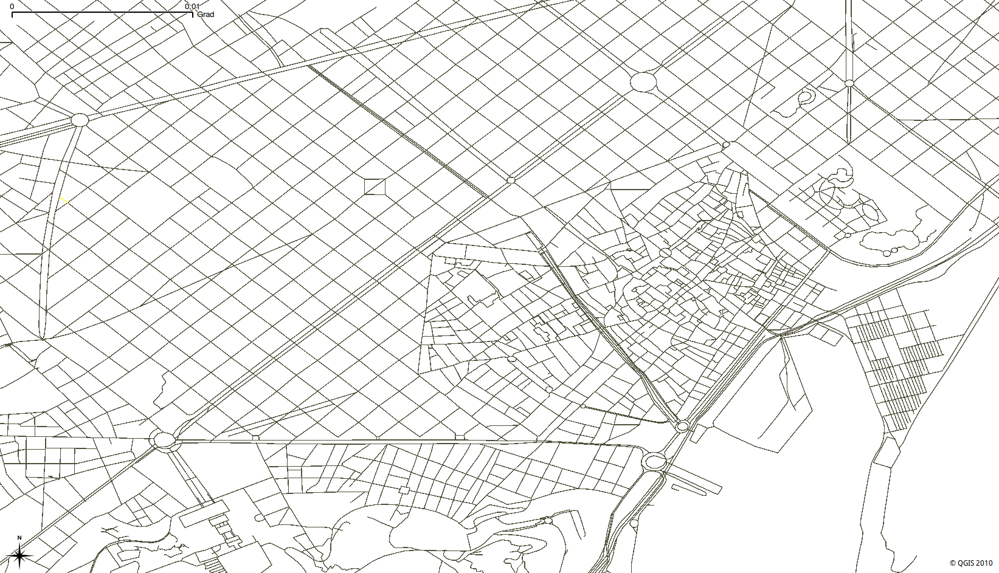

4. ネットワークトポロジーを作成する¶
{kind=link}

osm2pgrouting は便利なツールで、その対象は OpenStreetMap データです。osm2pgrouting が使えない場合もいくつかあります。ネットワークデータの中には、pgRouting でそのまま使えるネットワークトポロジーが最初から備わっているものもあります。また、ネットワークデータは Shape ファイル形式 (.shp) で提供されていることが多く、その場合は PostGIS の shp2pgsql コンバータを使ってデータを PostgreSQL データベースにインポートできます。
では、どうすればよいのでしょうか?
この章では、ルート検索用のトポロジーを持たないネットワークデータから基本的な Routing Network Topology を作成する方法と、Routing Network Topology に必要な最小限の属性を作成する方法を学びます。
4.1. ネットワークデータを読み込む¶
まず、osm2pgsql を使って OpenStreetMap のサンプルデータを読み込みます。
CITY="DS_TZ"
cd ~/Desktop/workshop
cp ~/data/osm/$CITY.osm.bz2 .
createdb -U user osm_data
psql -U user -d osm_data -c "CREATE EXTENSION postgis;"
psql -U user -d osm_data -c "CREATE EXTENSION pgrouting;"
osm2pgsql -U user -c -d osm_data --latlong --cache 5 --cache-strategy sparse $CITY.osm.bz2
どのようなテーブルが作成されたかを確認しましょう:
実行: psql -U user -d osm_data -c "\d"
道路ネットワークデータを含むテーブルの名前は planet_osm_roads です。このテーブルは多数の属性で構成されています。
実行: psql -U user -d osm_data -c "\d planet_osm_roads"
普通は道路ネットワークデータは最低限、以下の情報を提供します:
道路のリンク ID (gid)
道路のクラス (class_id)
道路のリンクの長さ (length)
道路の名前 (name)
道路のジオメトリ (the_geom)
これにより QGIS のような GIS ソフトウェアで道路ネットワークデータが PostGIS レイヤとして表示できます。にもかかわらず、まだルート検索を行うには十分でありません。なぜなら、ネットワークトポロジーの情報を含んでいないからです。
次のステップでは PostgreSQL のコマンドラインツールを使用します。
psql -U user osm_data
4.2. ルート検索ネットワークトポロジーを作成する¶
PostgreSQL データベースにデータをインポートしたあと、pgRouting のためにもう1つのステップが必要になることがあります。
お使いのデータが正しい Routing Network Topology を備えていることを確認してください。これは、各道路リンクの source と target の識別子の情報で構成されます。上の結果は、このネットワークトポロジーに source と target の情報がまったく無いことを示しています。
Routing Network Topology の作成が必要です。
警告
PostGIS のトポロジーはルート検索には適していません。
pgRouting は、pgr_createTopology 関数によって Routing Network Topology を作成する汎用的な方法を提供しています。
この関数は次のことを行います:
各道路リンクに
sourceとtargetの識別子を割り当てます一定の許容値 (tolerance) の範囲内にある近くの頂点に同じ識別子を割り当てることで、論理的に「スナップ」できます。
それに関連する頂点テーブルを作成します。
基本的なインデックスを作成します。
pgr_createTopology('<table>', <tolerance>, '<geometry column>', '<gid>')
詳細な情報は pgr_createTopology を参照してください。
まず source 列と target 列を追加してから、pgr_createTopology 関数を実行し ... そして待ちます。
ネットワークの規模によって、この処理には数分から数時間かかることがあります。
進捗状況は PostgreSQL の NOTICE で確認できます
また、一時データを保存するために十分なメモリー (RAM または SWAP パーティション) が必要です。
tolerance パラメータの単位は、データの投影法によって決まります。通常は "degrees" (度) か "meters" (メートル) のいずれかです。この例では、tolerance を決めるためにジオメトリデータの投影法を確認します:
SELECT find_srid('public','planet_osm_roads','way');
find_srid
-----------
4326
(1 row)
この結果から、tolerance は 0.00001 になります
-- Add "source" and "target" column
ALTER TABLE planet_osm_roads ADD COLUMN "source" integer;
ALTER TABLE planet_osm_roads ADD COLUMN "target" integer;
-- Run topology function
SELECT pgr_createTopology('planet_osm_roads', 0.00001, 'way', 'osm_id');
4.3. ルート検索ネットワークトポロジーを検証する¶
基本的な Routing Network Topology があることを検証するには:
\d planet_osm_roads
また、頂点の情報を含む新しいテーブルが作成されています:
\d planet_osm_roads_vertices_pgr
idは頂点の識別子ですthe_geomはその頂点の識別子に対応するジオメトリです。planet_osm_roadsのsourceとtargetは、planet_osm_roads_vertices_pgrテーブルのidに対応しますその他の列は、トポロジーの解析に使用します。
これで、pgr_dijkstra やその他の pgRouting のクエリを使った最初のルート検索クエリを実行する準備ができました。
4.4. ルート検索ネットワークトポロジーを解析して調整する¶
pgr_analyzeGraph を使ってトポロジーを解析します:
SELECT pgr_analyzeGraph('planet_osm_roads', 0.000001, the_geom := 'way', id := 'osm_id');
トポロジーの調整は簡単な作業ではありません:
孤立したセグメントは、データの誤りなのでしょうか?
孤立したセグメントは、バウンディングボックスの端にあるためにそうなっているのでしょうか?
行き止まりの近くで検出された隙間の候補は、tolerance が小さすぎたために生じたのでしょうか?
交差箇所は実際の交差点であり、ノード化する必要があるのでしょうか?
それとも交差箇所は橋やトンネルであり、ノード化する必要は無いのでしょうか?
用途に応じて、いくつかの調整が必要になります。
いくつかの トポロジー操作 の関数を使うと、データに含まれるトポロジーの誤りの一部を検出して修正できます。